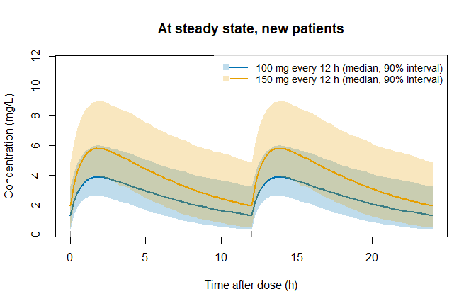

Steady state and data below the quantification limit
Source:vignettes/data-features.Rmd
data-features.RmdClinical PK data often come from patients already on treatment (steady state) and contain concentrations below the lower limit of quantification (LLOQ). bayespk reads both from NONMEM-style columns.
Steady state (SS = 1)
A dose record with SS = 1 and II means that
the dose has been given every II for a long time.
Concentrations are computed in closed form as the sum over the infinite
train of earlier doses. Earlier dose records of the subject are ignored,
as in NONMEM. Observations within one interval before the steady-state
dose, typically the pre-dose trough, are used.
Simulated example: 16 patients on 100 mg every 12 hours, sampled from a trough just before the observed dose to the next trough.
set.seed(2)
times <- c(-0.25, 1, 2, 4, 8, 11.5)
ss_data <- do.call(rbind, lapply(1:16, function(i) {
par <- c(CL = 3 * exp(rnorm(1, 0, 0.3)), V = 30 * exp(rnorm(1, 0, 0.2)), KA = 1.2)
conc <- pk_conc(times, dose_regimen(100, ii = 12, ss = TRUE), par, "1cmt", "oral")
rbind(data.frame(ID = i, TIME = 0, AMT = 100, II = 12, SS = 1, DV = NA, EVID = 1),
data.frame(ID = i, TIME = times, AMT = 0, II = 0, SS = 0,
DV = signif(conc * (1 + rnorm(length(times), 0, 0.15)), 3), EVID = 0))
}))
head(ss_data, 7)
#> ID TIME AMT II SS DV EVID
#> 1 1 0.00 100 12 1 NA 1
#> 2 1 -0.25 0 0 0 3.04 0
#> 3 1 1.00 0 0 0 3.64 0
#> 4 1 2.00 0 0 0 4.67 0
#> 5 1 4.00 0 0 0 4.40 0
#> 6 1 8.00 0 0 0 3.58 0
#> 7 1 11.50 0 0 0 2.41 0
fit_ss <- bpk_fit(pk_model("1cmt", "oral", iiv = c("CL", "V")), ss_data,
chains = 4, cores = 4, seed = 1)
summary(fit_ss)
#> variable mean sd q5 q50 q95 rhat ess_bulk ess_tail
#> CL 3.330 0.2790 2.890 3.320 3.800 1 4620 2770
#> V 27.700 2.8500 23.400 27.500 32.700 1 3650 2770
#> KA 1.230 0.2440 0.920 1.200 1.660 1 3650 2690
#> omega_CL 0.321 0.0686 0.230 0.311 0.445 1 683 1480
#> omega_V 0.280 0.0855 0.158 0.270 0.431 1 1590 1900
#> sigma_prop 0.171 0.0156 0.148 0.170 0.199 1 2340 2420The data were simulated with CL 3, V 30 and KA 1.2. Steady-state data carry little information about absorption: only one sampled interval and no single-dose profile. The interval for KA is therefore wider than for CL.
Predictions at steady state use dose_regimen(ss = TRUE),
here 100 mg against 150 mg every 12 hours:
a <- predict(fit_ss, regimen = dose_regimen(100, ii = 12, n = 2, ss = TRUE), times = seq(0, 24, 0.25))
b <- predict(fit_ss, regimen = dose_regimen(150, ii = 12, n = 2, ss = TRUE), times = seq(0, 24, 0.25))
plot(a, compare = b, labels = c("100 mg every 12 h", "150 mg every 12 h"),
main = "At steady state, new patients", xlab = "Time after dose (h)", ylab = "Concentration (mg/L)")
plot of chunk ss-pred
Below the quantification limit (CENS = 1)
Put the LLOQ in DV and CENS = 1 on such
rows. The likelihood of these observations is the probability that the
concentration is below the limit (Beal’s M3 method), instead of a
density at an invented value. Dropping them, or setting them to LLOQ/2,
biases late-phase and elimination estimates.
set.seed(4)
times <- c(0.5, 1, 2, 4, 6, 8, 12, 24, 36)
lloq <- 0.5
blq_data <- do.call(rbind, lapply(1:20, function(i) {
par <- c(CL = 3 * exp(rnorm(1, 0, 0.3)), V = 30, KA = 1.2)
conc <- pk_conc(times, dose_regimen(100), par, "1cmt", "oral")
dv <- conc * (1 + rnorm(length(times), 0, 0.15))
cens <- as.numeric(dv < lloq)
rbind(data.frame(ID = i, TIME = 0, AMT = 100, DV = NA, EVID = 1, CENS = 0),
data.frame(ID = i, TIME = times, AMT = 0, DV = ifelse(cens == 1, lloq, dv), EVID = 0, CENS = cens))
}))
table(blq_data$CENS[blq_data$EVID == 0])
#>
#> 0 1
#> 143 37
fit_blq <- bpk_fit(pk_model("1cmt", "oral", iiv = "CL"), blq_data, chains = 4, cores = 4, seed = 1)
#> 37 observation(s) below the quantification limit (CENS = 1) are handled by Beal's M3 method.
summary(fit_blq)
#> variable mean sd q5 q50 q95 rhat ess_bulk ess_tail
#> CL 3.330 0.24100 2.950 3.320 3.730 1 4350 2830
#> V 29.700 0.79500 28.500 29.700 31.000 1 2600 2910
#> KA 1.180 0.06270 1.080 1.180 1.290 1 2650 2950
#> omega_CL 0.309 0.05580 0.231 0.303 0.414 1 624 1060
#> sigma_prop 0.141 0.00917 0.127 0.141 0.157 1 3040 2840The data were simulated with CL 3, V 30, KA 1.2, a between-subject SD of 0.3 on CL and a proportional residual SD of 0.15.
CENS = 1 works with every residual error model; with
error = "log" the limit must be positive.